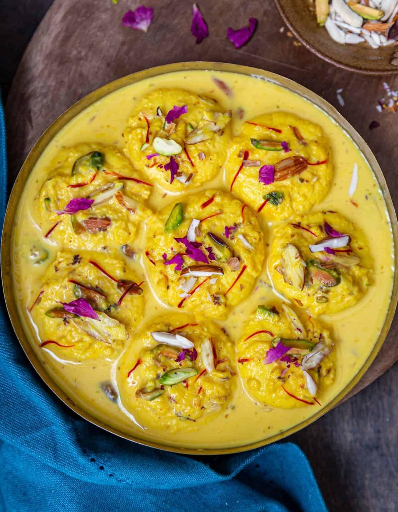

Rasmalai
⭐⭐⭐⭐⭐ 4.9 Rating | ⏱ 60 Minutes | 🍽 6 Servings
Category
Dessert
Difficulty
Medium
Calories
250 kcal
Cooking Style
Indian Sweet
📋 Ingredients
- 1 Liter Full Cream Milk
- 2 tbsp Lemon Juice or Vinegar
- 1 Cup Sugar
- 4 Cups Water
- 500 ml Milk (For Rabri)
- ¼ Cup Sugar
- ½ tsp Cardamom Powder
- A Few Saffron Strands
- 2 tbsp Chopped Pistachios
- 2 tbsp Chopped Almonds
🍳 Required Utensils
- Large Saucepan
- Pressure Cooker or Deep Pan
- Strainer
- Muslin Cloth
- Mixing Bowl
- Serving Bowl
📖 Introduction
Rasmalai is a famous Bengali dessert made with soft paneer (chena) balls soaked in sweet, creamy saffron-flavored milk. It is rich, delicious, and often served during festivals and celebrations.
🔬 Principle
Milk is curdled to prepare fresh paneer. The paneer is shaped into soft balls, cooked in sugar syrup, and then soaked in thickened flavored milk (rabri), allowing the dessert to absorb sweetness and aroma.
👨🍳 Procedure
- Boil 1 litre of milk.
- Add lemon juice to curdle the milk.
- Strain the paneer using a muslin cloth.
- Wash with cold water to remove sourness.
- Squeeze out excess water.
- Knead the paneer until smooth.
- Shape into small flat balls.
- Boil sugar and water to prepare syrup.
- Cook the paneer balls in the syrup for 15 minutes.
- Boil 500 ml milk until slightly thick.
- Add sugar, cardamom powder, and saffron.
- Cool the milk slightly.
- Add the cooked paneer balls.
- Refrigerate for 2–3 hours.
- Garnish with almonds and pistachios before serving.
⚠ Precautions
- Use fresh full-cream milk.
- Knead the paneer until smooth.
- Do not overcook the paneer balls.
- Cool the rabri before adding the paneer.
- Serve chilled for the best taste.
💡 Chef Tips
- Add rose water for extra fragrance.
- Use fresh saffron for rich flavour.
- Garnish generously with dry fruits.
- Refrigerate overnight for enhanced taste.
- Serve in chilled dessert bowls.
🥗 Nutrition Facts
| Nutrient | Amount |
|---|---|
| Calories | 250 kcal |
| Protein | 8 g |
| Carbohydrates | 28 g |
| Fat | 10 g |
| Calcium | 220 mg |
🍽 Serving Suggestions
- Serve chilled.
- Garnish with almonds and pistachios.
- Enjoy after lunch or dinner.
- Serve during festivals and celebrations.
- Pair with other Indian sweets.
🌿 Health Benefits
- Rich source of calcium.
- Contains high-quality milk protein.
- Provides energy.
- Dry fruits offer healthy fats.
- Best enjoyed occasionally as a dessert.
✅ Result
The prepared Rasmalai should have soft, spongy paneer discs soaked in rich, creamy saffron-flavored milk. It should be mildly sweet, aromatic, and garnished with chopped almonds and pistachios, making it a perfect festive dessert.
🎥 Watch Recipe Video
Learn the complete recipe by watching the step-by-step video.
▶ Watch on YouTube